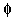

Signs for technical/specialized vocabulary
David Bar-Tzur
Links updated monthly with the help of LinkAlarm.

Fencing1; fractals.2
EXPLANATION OF THE GLOSSING SYSTEM
(to understand how I describe the signs in this dictionary).
For content knowledge of how to use the physics terms in context, see Guided tutorial in physics for interpreters.
For negotiating and developing temporary signs, see Preparation and sign negotiation
For vocabulary lists to determine helpful signs for a specific discipline, see Vocabulary lists by topic.
- facade
- (1) [Bb], PO > face, circles face. (2) BUILDLING FRONT.
- face shield
- (2h)[C dot] are held in the same position as if they were going to sign EQUAL, but at a level with the top of the head. Mime pivoting down a face shield.
- face value
- FACE VALUE.
- facilitate
- (2h)[B], POs away, FOs down, hands are held low and circle repeatedly as if pushing something forward.
- fact
- (2h)[B], POs up, FOs away, DH taps FT on NDH palm several times.
- factor
- ~ (n, math)
- (1) F-A-C-T-O-R. (2) (2h)bC-CL'parentheses'.
- ~ (n, not math, as in "poverty was a ~ in his depression".)
- INFLUENCE.
- ~ (v)
- DECIDE (<) (2h)bC-CL'parentheses at left', (>) (2h)bC-CL'parentheses at right'.
- ~ out (v, sometimes the "out" is dropped)
- (2h)bC'place parentheses', (2h)[V], extract something from the parenthetical expression by changing to (2h)[V:].
- factorial (such as "n!")
- Draw exclamation point with index finger.
- faculty
- F-MEMBER.
- faculty/staff
- F,S-MEMBER, that is, [F], PO down, touches NDS of chest, then [S], PO down, touches DS of chest.
- fade
- DISSOLVE.
- fade in (stage lighting)
- (2h)[S], FOs up, DH further from body, both hands are in front of face and open while separating to (2h)[5:].
- fade out (stage lighting)
- (2h)[5:], FOs up, DH further from body, both hands are at the sides of the face and close while approaching until (2h)[S] is in front of face.
- faggot
- [open 8], PO towards signer, moves from chin or tongue, across eyebrow and over shoulder. Tongue is extended. For a QuickTime movie of this sign, see ASL browser - homosexual.
- fagocytize
- DH [5] encircles [S] + [5:] touches FT to palm of [B], PO > DS, FO up, and DH closes and opens as is travels up the palm, as if taking small bites of it, while gnashing the teeth with each bite.
- Fahrenheit
- O"superscripted" F.
- failed (dive)
- FAIL.
- faint
- (1) [1] touches temple, then (2h)[S], PO towards, crossed at wrists, open while pronating, like THINK SAVE. (2) [K] touches temple with middle finger and descends while closing to strike [B], PO up with pinkie side. For a QuickTime movie of this sign, see ASL browser - pass out. (3) THINK + (2h)[5] drop hands to side as if signer fainted. (4) Touch temple and (2h)[5] start from their respective sides and slide their palms against each other as they pass to the opposite side.
- Fairchild advanced Schottky TTL
- F-A-S-T.
- fairy
- (2h)[B^] touch FTs to shoulders, then hands twist to FOs > sides and FT flutter. For a movie of this sign, see Dictionary of Sign (ASL) - fairy.
- faith
- (1) Touch temple with [1] + (2h)[5], DH above NDH, POs > signer, close to (2h)[S] as if grasping a rope that is attached to the stomach. For an animated gif of this sign, see Animated dictionary of religious signs - Deaf Missions: Faith, first animation. (2) Touch temple with [1] + (2h)[F], DH above NDH, POs > signer. For an animated gif of this sign, see Animated dictionary of religious signs - Deaf Missions: Faith, second animation. (3) (2h)[5], DH above NDH, POs > signer, close to (2h)[S] as if grasping a rope that is attached to the stomach. For an animated gif of this sign, see Animated dictionary of religious signs - Deaf Missions: Faith, third animation.
- Faithful, the
- PEOPLE FAITH GOD.
- faith group
- GROUP BELIEVE STANDARD, where the last sign is (2h)[Y], PO down, FO away, circle horizontally. For a QuickTime movie of STANDARD, see ASL browser - standard.
- faith tradition
- GROUP BELIEVE STANDARD, where the last sign is (2h)[Y], PO down, FO away, circle horizontally. For a QuickTime movie of STANDARD, see ASL browser - standard.
- fake (basketball)
- Index finger and thumb of DH grasp nose and pull it downwards.
- fall (hairpiece)
- FALSE + FT of [4] touch side of head and descend to show a partial hairpiece.
- fallopian tubes
- (1) (2h)G-CL follow the path of the Fallopian tubes from the pubic area to the hips. (2) (2h)G-CL follow the path of the Fallopian tubes from the pubic area to the hips ending with (2h)F-CL, PO > signer placed at the site of the ovaries.
- family planning
- FAMILY, PLAN++.
- famous
- (2h)[1] point to respective sides of mouth and then spiral outwards in two successive arcs.
- fancy
- Thumb of [5], PO > NDS, FO up, repeatedly strikes chest while circling up and mouthing "pipipi".
- Fant, Lou
- L-O-U.
- fantasy
- ~ (general)
- (1) (2h)[F] touch closed FT to respective temples and alt. move up and away (once) in spirals. (2) (2h)alt.INVENT.
- ~ (sexual)
- SEX, (2h)[F] touch closed FT to respective temples and alt. move up and away (once) in spirals. (2) SEX, (2h)alt.INVENT.
- farad
- "F".
- farce
- MOCK ACT.
- fashion
- (1) (2h)[F], POs down, FOs away, hands alt. circle as they brush down chest. For a QuickTime movie of this sign, see ASL browser - fashion. (2) (2h)[F], POs away, FOs up, hands alt. move forward and back.
- fast, fasting
- ~ (general)
- [F] draws closed FTs across lips. (< the closing of the lips.) For an animated gif of this sign, see Animated dictionary of religious signs - Deaf Missions: Fast.
- ~ (Jewish)
- A-GUILTY. (< beating the heart while confessing a list of sins, which occurs during the afternoon service of fast days.)
- fast ball (baseball)
- [B^], PO away, FO up, moves away sharply.
- fast break (basketball)
- ESCAPE.
- fast Fourier transform
- F-F-T.
- fat
- ~ (adj)
- (2h)[5:] at sides, PO > body, moves out from body with pc.
- ~ (n)
- F-A-T.
- father
- ~
- (1) Thumb of [5], PO > NDS, FO up, taps at temple. (2) Thumb of [5], PO > NDS, FO up, touches temple and wg.
- adoptive (~)
- (1) (2h)[5:] close to (2h)[S], and pull up abruptly. (2) ACCEPT, that is, (2h)[5], PO down, FO away, moves towards chest until it ends with (2h)[O^], flat against chest.
- biological (~)
- See "natural" below.
- foster (~)
- F-PARENT.
- natural (~)
- (1) NATURE. (2) REAL.
- step (~)
- (1) FALSE. (2) SECOND.
- (uppercase, Heavenly) ~
- (1) (2h)[A], FOs up, DH is held against forehead, NDH close to head but lower, both hands open to (2h)[5] while moving upwards. (2) HEAVEN + (1) above. (3) (1) + IN HEAVEN.
- ~ (title for Roman Catholic priest)
- ~ (without his name)
- [G], PO > signer, FO up, is drawn against neck. (< clerical collar.)
- ~ (with his name as in "~ Jim")
- F-R + name.
- fatigue
- (1) TIRED*, that is (a) the sign is produced, (b) the body is moved forward, and (c) the head bows, all three are done sharply. (2) TEND-TO-BE TIRED [POSS]. The first sign has (2h)[open 8] touching the chest, then moving forward with body, mouth forms "pi". The final sign shows possession and the palm faces the person spoken about.
- fault
- ~ (computers)
- MISTAKE.
- ~ (crack in a surface)
- Use small finger side of B-CL to indicate shape and location of crack and degree of zz to indicate severity.
- ~ (responsibility for a bad action)
- (1) RESPONBSIBILITY HIS/HERS. (2) BLAME-him/her.
- FAX
- (2h)[B], POs down, FOs away but crossed. DH moves under NDH while fingers wave slightly together.
- fear of God
- GOD, + (2h)[B], POs away, torso and hands bow down 2x to direct object.
- feast (of, day)
- (1) (2h)alt.EAT. (2) CELEBRATE.
- Feast of Ascension
- DH [V] stands on NDH B, PO up and DH ascends + (2h)alt.EAT. (2) DH [V] stands on NDH B, PO up and DH ascends + CELEBRATE.
- Feast of Tabernacles
- (1) (2h)[A] is shaken like the sign TOGETHER, but slowly and with an exaggerated movement. (2) (2h)[S], POs away, separate and then descend.
- Feast of Weeks
- (1) 7-WEEK. (2) S-WEEK. (1) & (2) [< the fact that it occurs seven weeks after Pesach (Passover).] (3) (Israeli sign) [bO] opens and closes as it travels across the forehead. (< the crown that is worn in some customs.)
- feather
- [G], FOs up, touches FTs to head and closes to outline feather on head. For a QuickTime movie of this sign, see ASL browser - feather.
- feature
- F-E-A-T-U-R-E.
- feature story
- (1) MAIN STORY. (2) NUMBER-ONE STORY, where NUMBER-ONE is [1], PO > signer, FO > NDS, hand is held at chin level and is brought rapidly from NDS to DS.
- feces
- EXCRETE, that is, thumb of DH [A dot] is held inside of [A], PO > DS, FO away, and then descends + 5:-CL places feces.
- federal
- F-GOVERNMENT.
- Federal Aviation Administration
- F-A-A.
- Federal Communications Commission
- F-C-C.
- Federal Reserve
- (1) FEDERAL + FT of [R] taps backhand of [S], PO > signer, FO > DS. (2) FEDERAL + FT of [V], PO > signer, taps backhand of [S], PO > signer, FO > DS.
- fee
- F-E-E.
- feedback
- ~ (from hearing aid)
- [E], PO away, FO up, is held at ear and moves > DS in wavy motion while mouthing "ee".
- ~ (from person or equipment)
- (1) (2h)[S], POs down, NDFO towards, DHFO away, index finger is flicked out 2x. (2) (2h)[F], NDHPO towards, DHPO away, FOs up, hands are nodded 2x at wrist. For a QuickTime movie of this sign, see ASL browser - feedback.
- feet first (diving)
- (1) [V^], PO down, FO away, stands on backhand of [B], PO down, FO away, and jumps feet first off board.
(2) FEET + [1], PO down, FO away, supinates and strikes the thumb of [A dot], PO > signer, FO > DS.
- fellatio/n
- (1) [5^] strokes NDH [1] or [H] from root to tip repeatedly. (2) (1h) or (2h)[S] move(s) as if pulling the penis into the mouth. Tongue may push out ND cheek. (3) [5^] twists back and forth around FT of [1], PO down, FO > DS.
- fellowship
- (1) (2h)[A dot] circle around each other's thumbs. For a QuickTime movie of this sign, see ASL browser - fellowship. (2) (2h)[5] circle around each other's FTs.
- female
- Thumb of [A dot] brushes down chin once.
- female-bodied
- BODY GIRL/WOMAN.
- female to male, FTM
- F-T-M.
- feminine
- (1) Thumb of [A dot] strokes DS jaw once + POSS.++ (2) Thumb of [A dot] strokes DS jaw horizontally several times. (3) (2h)[F], FO up, alt. move to and fro at elbows in an feminine manner with mm..
- femme
- (2h)[F], FO up, alt. move to and fro at elbows in an effeminate manner with hu. For a QuickTime movie of this sign, see ASL browser - sissy.
- femoral region
- Thumbside (ulnar) edge of [B], PO > NDS, FO away, runs along the thighs from hip to knee.
- fencing
- bO-CL circles with foil, then thrusts forward.
- fermion
- F-E-R-M.
- fermium
- F-M. For more information on this and other elements, see The elements. And for fun, see Elements by Tom Lehrer. To see this song with captions, go to The Elements song by Tom Lehrer.
- fertile
- ~ (land)
- PLANT(v), GROW EASY CAN.
- ~ (woman)
- (2h)[5], FOs >< moves towards each other from the sides of the stomach and interlace FTs EASY CAN(, TEND).
- fertilization (animal)
- EGG + DH [1] pierces between the fingers of NDH [5], PO > signer, FO up.
- festival
- (1) CELEBRATE. (2) (2h)[5], POs ><, tap thumbs on respective sides of chest. (3) HOLY DAY.
- Festival of Trumpets (World Wide Church of God)
- (2h)5wg-CL'play trumpet'.
- fetus
- BABY (STILL) INSIDE-self.
- fever
- Hold dorsum (back of hand) against forehead. For a movie of this sign, see Dictionary of Sign (ASL) - fever.
- fiancé/fiancée
- [F], PO down, circles and lands on ring finger of NDH [5].
- fiber distributed data interface
- F-D-D-I.
- fiber optics (now called "photonics")
- (2h)F-CL, POs ><, FOs up, are held together and DH moves away in a wavy pattern and ends with S>1-CL where the [S] flicks out the index finger as if showing a the transmission of information along an optical fiber.
- fiction
- STORY INVENT.
- fiduciary
- MONEY CONTROL AGENT.
- field
- ~(computers)
- [F], runs closed FT > DS along index finger of [5], PO > signer, FO > DS.
- ~ (electric)
- (1) F-AREA. (2) INFLUENCE~THEREABOUTS.
- ~ (profession)
- MAJOR, that is, (2h)[Bb], POs > opposite side, FOs away, DH is held above and touching NDH and DH moves straight down the NDH.
- ~ (sports)
- F-I-E-L-D.
- out in the ~
- (1) OUTSIDE, REAL WORLD. (2) OUTSIDE, PROFESSIONAL WORLD.
- field-effect transistor
- F-E-T.
- field goal
- F-G.
- field hockey
- F-I-E-L-D + [X], PO up, FO away, scrapes > NDS against palm of [B], PO up, FO away.
- fielding practice
- (1) (2h)[5:], POs up, DH is held in NDH and both close while moving towards signer 3x + PRACTICE. (2) (2h)[5:], POs up, DH is held in NDH and both close while moving towards signer 3x + (2h)[5:], POs away, DH is held in NDH and both close while moving > signer 2x + PRACTICE.
- field programmable gate array
- F-P-G-A.
- field programmable logic array
- F-P-L-A.
- field programmable logic sequencer
- F-P-L-S.
- field replaceable unit
- F-R-U.
- field trip
- [V] outlines a wavy path to represent someone visiting different places. For a QuickTime movie of this sign, see ASL browser - field trip.
- fieldwork
- F-I-E-L-D WORK.
- figure
- ~ (illustration, as in "Fig. 12-2")
- F-I-G.
- ~ (object or perception)
- SHAPE.
- figure out
- (2h)[K], POs >lt;, FOs away. DH brushes its bottom side against top of NDH multiple times. Note: MULTIPLY has a single movement.
- figure skating
- (1) (2h)[X], POs up, FOs away, move alt. to and fro like the natural movement of the feet + DANCE. (2) F-I-G-U-R-E + (2h)[X], POs up, FOs away, move alt. to and fro like the natural movement of the feet.
- Fiji Islands
- (2h)[3:] held at each ear and shake. [< coconut(?).] To see the reference source for the sign(s) for this country or to look up other countries in the same geographical area, see Indigenous signs for countries. To find signs for cities within this country (some have no entries) see Indigenous signs for cities.
- filament
- F-I-L.
- file
- ~ (for folders)(1) NDH [5], PO towards, FO > DS, DH [B], PO up, FO away, DH moves towards NDH multiple times while descending, as if placing "papers" between "folders".
- ~ (tool)(1) (2h)[H], DH rubs bottom of FT against FT of NDH in small movements to and for as if filing.
- to ~ (folders) [B], PO up, FO away, is inserted between the fingers of [5], PO towards, FO > DS.
- to ~ (for a legal proceedings)
- (1) [V] comes down on [1], PO > DS, FO up, like ringer in horseshoes. (2) FT of [F] pull at shirt/blouse several times.
- to ~ (rough material)(1) (2h)[H], DH rubs bottom of FT against FT of NDH in long movements away from body as if filing.
- file allocation table
- F-A-T.
- file transfer protocol
- F-T-P.
- fillet weld
- (2h)[Bb], NDH PO down, FO away, DH PO > NDS, FO away are joined with little finger edge of DH touching the index edge of the NDH. With NDH held in place, run the FT of [L] as if welding.
- film
- ~ (movie)
- (2h)[5], DPO away, rocks its wrist against index finger of NDH, PO > signer, FO > DS.
- (roll of) ~
- (2h)[5], DPO away, rocks its wrist against index finger of NDH, PO > signer, FO > DS + (2h)[bC], POs away, FOs up, are held side-by-side and separate at a diagonal to show the outline of a roll of film.
- ~ (thin layer)
- [G], PO away, FO up, rubs thumb in circles against backhand of [B], PO down, FO away with hu.
- film chain
- MOVIE CHAIN.
- film integrated circuit
- F-I-C.
- filmstrip
- PICTURE + (2h)[bC], POs away, FOs up, are held side-by-side and separate at a diagonal to show the outline of a roll of film.
- filter
- ~ (n, general)
- (2h)[4], POs towards, DH moves slightly against NDH (either in a circle or from side to side) as if filtering something. For a QuickTime movie of this sign, see ASL browser - filter.
- ~ (photography)
- (1) [horns], PO > signer, FO > NDS, slides > NDS over backhand of [B, PO > signer, FO up. (2) [F] is inserted from above into [C^], PO up, FO away.
- ~ (verb)
- DH [4] pushes FT between FT of NDH [5], PO up, FO away, several times. For a QuickTime movie of this sign, see ASL browser - strainer.
- filter adaptor
- FILTER HOLD. Lab-alpha.htm">Labware drawings index.
- filtering flask
- (2h)[Bb], FOs away, ascend diagonally > each other, then (2h)[F] show thin neck and with NDH still in place DH shows tubing coming out from the neck.
- filtering funnel
- FILTER + (2h)[S], FOs away, DH descends from beneath NDH.
- filtrate
- FILTER FINISH, CHEMICAL LEFT?
- final (position, velocity, or acceleration)
- [I], PO down, FO away, strikes FT of [I], PO > signer, FO up, while traveling > DS.
- final condition (Chemistry, DIfferential equations)
- LAST (but FO up) + C-SITUATION.
- finance(s), financial
- (1) MONEY. (2) F-MONEY. For a QuickTime movie of this sign, see ASL browser - finance.
- financial aid
- MONEY SUPPORT.
- find (criminal justice)
- DECIDE.
- find for (the defendant or plaintiff, criminal justice)
- DECIDE (insert who) RIGHT.
- fine (punishment)
- (1) FT of [X], PO > NDS, FO away, descends and scratches palm of [B], PO > DS, FO away. (2) PUNISH.
- fine arts
- [F], PO > NDS, FO up, circle while brushing thumb up chest + [I], PO > NDS, moves down close to palm of [B] in a wavy pattern.
- fingerprint
-
- ~ (n)
- FTs of [5] touch palm of [B] in succession as if being fingerprinted + F-CL places fingerprint in space. For a QuickTime movie of the first part of this sign, see ASL browser - fingerprint.
- ~ (v)
- (1) First three FTs of [5] are rocked on palm of [B] in succession as if being fingerprinted. (2) FTs of [5] touch palm of [B] in succession as if being fingerprinted. For a QuickTime movie of this sign, see ASL browser - fingerprint.
- fingerspell
- [S], PO away, FO up, hand is repeatedly opened to a [5^] while flicking fingers out.
- fingerspelling
- [5] is moved > DS while fluttering fingers.
- finials
- TORAH, S-I-L-V-E-R (2h)O-CL'silver ornaments slid onto top of rollers'.
- finish (on walls or furniture)
- G-CL, PO away, FO up, runs along surface of [B], PO down, FO > DS, moving > DS to show a thin surface.
- finite
- (1) HAVE LIMIT. (2) CONTINUE FOREVER, NOT.
- Finland
- (1) [X dot] touches chin with FTs. For a QuickTime movie of this sign, see ASL browser - Finland. (2) [B], PO > NDS is held high and swerves in a backward "S" as seen by the signer and continues towards the right while twisting at the wrist. (< shape of coastline.) To see the reference source for the sign(s) for this country or to look up other countries in the same geographical area, see Indigenous signs for countries. To find signs for cities within this country (some have no entries) see Indigenous signs for cities.
- fireworks
- (2h)[S], POs away, FOs up, alt. rise and flick out index fingers. For a QuickTime movie of this sign, see ASL browser - fireworks. (2) (2h)[S] alt. flick fingers out diagonaly away. For a movie of this sign, see Dictionary of Sign (ASL) - fireworks.
- firm (company)
- F-I-R-M.
- first aid
- FIRST A-I-D.
- first base
- (1) 1-B. (2) 1-B-1-B is signed rapidly.
- First (or 1) Chronicles [Heb. Divrei HaYamim Aleph]
- FIRST C-H.
- First Communion
- VERY-FIRST + [F], PO facing signer, makes the sign of the cross at the mouth. VERY-FIRST = [1] strikes thumb of NDH [A], PO > DS, FO up with a supinating movement like FIRST.
- First Corinthians (Πρὸς Κορινθίους ά)
- FIRST C-O.
- first five
- [1], PO down, FO away, supinates while changing to a [5].
- first-in-first-out
- F-I-F-O.
- first-in, first-out memory
- F-I-F-O.
- first-in-last-out
- F-I-L-O.
- First John (Ἰωάννου ά)
- FIRST J-O.
- First Kings [Heb. Melachim Aleph]
- (1) FIRST K-I or FIRST BOOK KING. (2) FIRST BOOK KING INDEX-LIST-ON-HAND.
- First Peter (Πέτρου ά)
- (1) FIRST P-E. (2) FIRST P-STONE.
- First Samuel [Heb. Shmuel Aleph]
- FIRST S-A.
- First Thessalonians (Πρὸς Θεσσαλονικεῖς ά)
- FIRST T-H.
- First Timothy (Πρὸς Τιμόθεον ά)
- FIRST T-I-M.
- fiscal
- (1) MONEY. (2) F-MONEY.
- fishing
- (2h)[bX], NDHPO > DS, NDHFO away, DHPO > signer, FO > NDS, DH reels in fishing line, then DH rises above NDH with PO > NDS, FO away, and both hands pull back on fishing rod.
- fission
- ATOM + (2h)[5:], touch FTs, then both hands supinate like an egg cracking open.
- fission hypothesis
- (2h)[5:] touch FTs and then break apart + HYPOTHESIS, where the last sign is [5], PO down, FO away, wg while it descends and touches [B], PO down, FO > DS + [H] circles temple.
- fisting
- NDH [C], PO away, FO up, represents orifice, [S] represents fist being introduced into the orifice.Putting the whole hand into someone's vagina or anus for sexual gratification.
- fitting
- ~ (HVAC)
- (2h)[5:], POs > signer, DH interlaces fingers with NDH.
- ~ (and proper)
- APPROPRIATE, that is, RIGHT+.
- Five pillars of Islam (أركان الإسلام)
- (1) MUSLIM BELIEVE INDEX-LIST-OF-FIVE. (2) (2h)[B], palms face each other and hands descend at DS and then NDS + [bC], PO > NDS, FO up, moves forward + INDEX-LIST-OF-FIVE. For a film of this Saudi sign, click on Pillars of Islam. (< PILLARS ISLAM LIST-OF-FIVE)
- (1) Iman (إيمان) - Faith or belief in the Oneness of God (Allah) and the finality of the prophethood of Muhammad
- Touch heart with FT of [B^] + (2h)[B], DH PO > NDS, FO away, slides directly away on upturned palm of NDH. (< HEART STRAIGHT/RIGHTEOUS)
- (2) Salah, Salat, Namaz - Establishment of the 5 daily prayers
- See entry for "pray" + FIVE-TIME EVERYDAY.
- (3) Zakah, Zakat (الزكاة) - Concern for and almsgiving to the needy
- (1) ONE-FORTIETH. (2) [V], PO > signer is dragged along forearm from elbow, then [O^], PO up, FO away, moves away while rolling fingers to end in an [A]. If this is confusing, use the previous option. For a film of this Saudi sign, click on Zakat. (< POOR-PEOPLE PAY-FOR)
- (4) Sawm (الصوم) - Self-purification through fasting
- [Bb] wipes FT across mouth. For a film of this Saudi sign, click on Fasting.
- (5) Hajj (الحج) - The pilgrimage to Mecca
- (1) VISIT MAKKAH WORSHIP. (2) (2h)[O^], DH PO down, NDH PO up, hands revolve around each + [A] moves like throwing something and ends in an [L]. For a film of this Saudi sign, click on Pilgrimage. (< worshippers walking around the Ka'bah and throwing stones at an obelisk, which is part of the Hajj)
- fixed
- ~ (doesn't move in space, as in "~ coordinate system")
- (1) The elbow of DH [S], PO > NDS, FO up, strikes NDH [B], PO down, held below it. (2) (2h)[S], hands cross at wrists and DH wiggles to get free but can't.
- ~ (value remains constant, as in "~ charge")
- (2h)[Y], POs down, FOs away, NDH stays in place while the DH descend and stops abruptly.
- fixed disk drive
- F-D-D.
- fixer (photography)
- F-I-X.
- fixture (Welding)
- F-I-X-T-U-R-E. Note: This is a tool or device used to hold pieces in place for welding. If the specific fixture is known, use classifiers to show what it looks like.
- flagellum
- [1], PO down, FO > NDS, FT flutters.
- flag football
- [5:] is held at pocket and moves away while closing to an [S] + FOOTBALL.
- flaishig, flaishik
- FOOD INVOLVE MEAT. (Yid) "meaty." Containing meat products and hence must be eaten by Jews separately from dairy products.
- flame
- F-L-A-M-E-.
- flame (Bunsen burner)
- [5wg], PO > NDS, FO up is place on top of [F], PO > DS, FO away.
- flame (candle)
- CANDLE + with DH in place, NDH [1] circles flame.
- flange
- F-L-A-N-G-E.
- flare (solar)
- [5 wg], PO > signer, FO up, rises past NDH [B], PO down, FO > DS, and DH changes to (1h)DISSOLVE.
- flashback
- AGAIN + (2h)[S] are held at forehead with DH closer to head, and hands suddenly open to (2h)[5] while separating.
- flask
- F-L-A-S-K. A flask can have so many different shapes that it's best to fingerspell it, but if you know which kind, see related vocabulary: Erlenmeyer, filtering, Florence, and volumetric.
- flatness problem (Astronomy)
- UNIVERSE FLAT, PROBLEM.
- flat weld
- (2h)[Bb], POs down, FOs away, held at waist level, are slapped together as if joined and the NDH stays in place while the DH [L] runs up and down the index finger of NDH as if welding it.
- flesh
- (1) The thumb and index finger pinches the back of the other hand to indicate the skin. For a QuickTime movie of this sign, see ASL browser - flesh. (2) The thumb and index finger pinches the cheek to indicate the skin.
- flexible (material or psychological)
- (1) DH grasps FT of NDH [B] and flexes them to and fro. (2) (2h)[O^] grasp imaginary material between them and flex it to and fro.
- flexion
- [S], PO > signer, FO up, is held with elbow bent and then the fist moves > signer.
- flip
- ~ (diving)
- [1], PO down, FO > signer, circles.
- ~ (hair)
- FTs of [(2h)[B] touch sides of head and curl up at ends where the flip would go.
- flip flop (computers)
- (1) F-F. (2) [F], PO down, FO away, is supinated.
- flirting
- (feminine or coy) ~
- (2h)[5], POs down are held with thumbs touching and FT wiggle. As flirting becomes more obvious, hands rotate in opposite directions while maintaining contact at thumbs.
- (masculine or direct) ~
- (2h)[5:], POs down are held with thumbs touching and hands rotate in opposite directions while maintaining contact at thumbs. As flirting becomes more forceful, hands rotate more urgently while maintaining contact at thumbs and facial expression becomes more malevolent.
- float
- ~ (general)
- [B], PO down, FO away, moves in wavy motion as if floating. For a QuickTime movie of this sign, see ASL browser - float.
- ~ (if classifier is appropriate)
- CL-shape moves in wavy motion as if floating.
- floating point
- [F], PO away, FO away, moves in a wavy line > DS + POINT.
- floating point unit
- F-P-U
- floating rate
- VARY R-A-T-E.
- flocculent
- IDEA~LIKE SHEEP FUR, where the last sign is (2h)[C], POs ><, FOs away, slide down respective sides of chest.
- flooding (Astronomy, earth science)
- FLOOD+, that is, WATER + (2h)[5wg], POs down, FOs away, rise several times.
- floor
- (2h)[Bb], POs down, FOs away, touch sides and separate.
- floor plan
- ~ (General)
- FLOOR PLAN.
- ~ (stage)
- STAGE PLAN.
- floppy (disk)
- FLEXIBLE.
- floppy disk controller
- F-D-C.
- floppy disk drive
- F-D-D.
- Florence flask
- (2h)[C], PO up, FO away, pronates to show spherical bottom, then changes to (2h)[F], POs ><, FOs away, with DH moving upwards to show thin neck.
- flow
- ~ towards the left
- (2h)[4],
DHPO up, NDHPO down, FOs away, both hands move towards left side.
- ~ towards the right
- (2h)[4], DHPO down, NDHPO up, FOs away, both hands move towards right side.
- ~ upwards or downwards
- DHPO > NDS, NDPO > DS, with the appropriate movement.
- flowchart
- F-C.
- fluency
- HOW-MUCH + (2h)[O^], POs up, move forward while thumb brushes FTs and changes into (2h)[A]. For a QuickTime movie of the second half of this sign, see ASL browser - fluent.
- fluent
- (2h)[O^], POs up, move forward while thumb brushes FTs and changes into (2h)[A]. For a QuickTime movie of this sign, see ASL browser - fluent.
- fluid
- FLOW CAN.
- fluidity
- DH [1], PO > NDS, FO up, touches the front of (or the back of) NDH [O], PO > DS.
- flunk
- DH [F], PO away, FO up, strikes thumbside against palm of NDH [B], PO away, FO up.
- fluorine
- ~ (as a free gas)
- "F" TWO'subscripted'. This is one of the "six diatomics" and when it's name is mentioned in a free state (which is a gas), the interpreter should sign this, rather than its chemical abbreviation.
- ~ (chemical abbreviation)
- "F". For more information on this and other elements, see The elements. And for fun, see Elements by Tom Lehrer. To see this song with captions, go to The Elements song by Tom Lehrer.
- flush
- ~ (a toilet)
- [S], PO down, FO away, moves like the action of flushing a toilet.
- ~ (pressed against)
- Use classifiers to show two surfaces pressed against one another. For example, if the surfaces are flat, press palms of (2h)[B] together.
- flux
- ~ ()
- DH [1], PO > NDS, FO up, touches the front of (or the back of) NDH [O], PO > DS.
- ~ density
- "B".
- fly (verb)
- (2h)[B^], POs away, FOs up, are held close to the shoulders for a small wings (like that of an insect) or further to the sides of the body for a bird, and FTs flutter together.
- flyout
- [B^], PO down, moves away in vertical arc, up then down + [A dot], PO > NDS, FO up, moves backwards over shoulder.
- f-number
- "F" NUMBER.
- foam (contraceptive)
- F-O-A-M, bC-CL'sprays inside vagina'.
- focal length
- "F".
- focal point
- FOCUS POINT.
- foci (horizontal ellipse)
- (2h)[bC]'show outline of horizontal ellipse' + DH [bC], PO > NDS, FO up, NDH [1] points to focus + NDH [bC], PO > DS, FO up, DH [1] points to focus.
- foci (vertical ellipse)
- (2h)[bC]'show outline of vertical ellipse' + 1 NDH [bC], PO away, FO up, NDH [1] points to focus + NDH [bC], PO down, FO > DS, DH [1] points to focus.
- focus
- ~ (attention or light)
- (2h)[B], POs ><, FOs up, move forwards and FT point downwards.
- to ~ equipment
- (2h)[C] if focusing tube is large and (2h)[F] if it is small, are held like a tube and both twist in order to focus.
- the difference of the distance between the point and the two foci is a constant
- DISTANCE BETWEEN POINT AND ONE FOCUS, TAKE-AWAY DISTANCE BETWEEN SAME POINT AND OTHER FOCUS SAME-OLD-THING, where the last sign is (2h)[Y], PO down, FO away, move symmetrically in circles parallel to the body.
- The locus of all points such that given two fixed points called foci, the sum of the distances between the point and the two foci is a constant
- L-O-C-U-S INCLUDE WHAT? TWO POINT+ (2h)[curled F]-CL'describe points', #ALL POINT"each" THEMSELVES EQUAL DISTANCE, bC-CL'draw ellipse'.
- focus (parabola, general and opens up)
- NDH [bC], PO up, FO > NDS, DH [1] points to where the focus of the parabola would be.
- focus (parabola, opens down)
- NDH [bC], PO down, FO > DS, DH [1] points to where the focus of the parabola would be.
- focus (parabola, opens left)
- Right hand [bC], PO > NDS, FO up, left hand [1] points to where the focus of the parabola would be.
- focus (parabola, opens right)
- Left hand [bC], PO > DS, FO up, right hand [1] points to where the focus of the parabola would be.
- "f of x" [f(x)]
- Although this is read "f of x", there is no point in signing it this way since it is never written like that. Better, "F", "X", (2h)bC-CL'parentheses around X'.
- foil (method: "first (terms), outer (terms), inner (terms), last (terms)"; math)
- Use NDH [4], PO > signer, FO up, to represent the four terms in a multiplication of two parenthetical expressions, which when multiplied will become a quadratic equation. For "first", point to index and ring fingers; for "outer", point to index and little fingers; for "inner", point to middle and ring fingers; for "last", point to middle and little fingers.
- fold
- ~ (make creases)
- Following the actual movement for the specific folding task, if known. Otherwise, (2h)[B], POs up, FOs away, are held apart. NDH pronates to the space between the hands, then DH pronates and lands on top of NDH.
- fold (out-of business)
- [S], PO > back, FO up, firmly places elbow on wrist of ND arm, [S], PO down, FO > DS, then DH keeps elbow in place , but topples like a tree > NDS until DH fist strikes ND elbow from above.
- folder (computer or file-)
- [B] is inserted repeatedly in NDH [C] as if it were a folder. For a QuickTime movie of this sign, see ASL browser - folder.
- follower
- FOLLOW AGENT. For an animated gif of this sign, see Animated dictionary of religious signs - Deaf Missions: Follower.
- follow spot (stage lighting)
- [O^], PO > NDS, FO up, descends diagonally while opening into a [5^] and "shining" down on [1], PO > DS, FO up + with hands still in position from the previous sign, NDH moves > DS and DH FT follow NDH as if keeping the light on it.
- fondling
- (2h)[open 8], POs away, move down in curvy motion with side to side rotation at wrists. Facial expression shows affection or malevolence as context dictates.
- font
- ~ (baptismal)
- BAPTISM PLACE.
- ~ (computers)
- F-O-N-T.
- food stamps
- EAT + FT of DH [H] touch FT of NDH [H], PO up.
- foot
- F-T.
- football
- (1) [S], PO > NDS, FO up, held high as if holding onto football, and throws imaginary ball forward while opening to [C]. (2) (2h)[5], POs ><, FOs up, interlace FTs. (3) NDH [B] is held high to ward off opponent while DH [C dot] holds ball at chest.
- footcandle (deprecated)
- F-C.
- footer (word processing)
- LAST+ + (2h)G-CL'banner'.
- footing
- (2h)[S], DPO > signer, FO up, pushes up NDH [S], PO > signer, FO > DS.
- footlambert (deprecated)
- F-L.
- foot per minute
- F-T, then hand descends and signs M-I-N.
- foot per second
- F-T, then hand descends and signs S.
- foot-pound
- F-T (pause) L-B.
- forage
- FOOD (2h)alt.PICK-UP.
- forbid
- DH [1] and NDH [B], POs ><, FOs up, strike palms and separate forcefully.
- force (Physics)
- "F".
- force diagram
- PICTURE SHOW ALL "F".
- force out (baseball)
- FORCE + [A dot], PO > NDS, FO up, moves backwards over shoulder.
- forceps
- [bC] pinches closed while ascending at a diagonal.
- forebrain
- FT of [X] taps at center of forehead.
- forecast
- (1) [V], PO away, touches eye with index finger and then moves under [B], PO down, and away. For a QuickTime movie of this sign, see ASL browser - forecast. (2) [V], PO away, touches eye with index finger and then moves under [B], PO down, and away.
- Forefather
- ~
- FATHER~LONG-AGO, where the second sign is [5], PO > NDS, moves in a vertical circle while moving back over shoulder.
- the ~s
- [A] strikes between the thumb and forefinger of [B], like BOTHER, but a single movement + [I] taps fingertip against throat +
J-A-C-O-B.
- forge
- [S] moves under [B] hand held like the ND part of the sign TABLE but higher to show the "oven" as if the DH were putting something into the forge.
- forgive (sins)
- (1) EXCUSE. For an animated gif of this sign, see Animated dictionary of religious signs - Deaf Missions: Forgive. (2) EXCUSE is signed the normal way for the person's hand dominance and then the sign is executed as if the person had the opposite hand dominance + FINISH. For an animated gif of this sign, see Animated dictionary of religious signs - Deaf Missions: Forgive.
- foreground
- (1) F-G is fingerspelled over NDH [B], PO down, FO > DS. (2) F,G-LAW, that is, is [F], PO away, touches upper half of NDH [B], PO down, FO > DS, then moves down while changing to [G] and touches lower half.
- foreplay
- (1) (2h)[1], FOs away, palms are rubbed in a circular motion against one another. Facial expression shows affection or malevolence as context dictates. (2) (2h)[ILY], FOs away, "palms" are rubbed in a circular motion against one another. Facial expression shows affection or malevolence as context dictates.
- foreskin
- Grasp index finger with all FT of NDH and pull away while closing NDH FT to a [O^].
- foretell
- PREDICT ANNOUNCE.
- fork
- (1) FT of DH [V], PO away, FO > NDS touch palm of [B], PO > DS, FO away, then DH twists PO > signer and touches palm again. (2) FT of DH [W], PO away, FO > NDS touch palm of [B], PO > DS, FO away, then DH twists PO > signer and touches palm again.
- forklift
- (1) DH [V], PO down, FO away, moves upwards with effort as if lifting something by forklift. (2) [horns], PO down, FO away, moves upwards with effort as if lifting something by forklift.
- form
- ~ (kind, as in "depending on the ~ of violence")
- KIND, that is, K-WORLD.
- ~ (paper to be filled out)
- (2h)[F], POs away, FOs up, touch, separate, and descend.
- ~ (shape, as in "~-fitting")
- (1) SHAPE. (2) F-O-R-M.
- ~ (v)
- MAKE.
- formal
- ~ (general)
- [5], PO > NDS, FO up, brushes up chest several times in a circular motion.
- ~ (gown)
- (FANCY +) (2h)[5] touch thumbs to shoulders and descend deeply and slowly.
- format
- ~ (n)
- (1) [F] circles palm of [B], PO > DS, FO up, in a vertical manner and then lands in its center. (2) F-O-R-M-A-T
- ~ (v)
- (1) FORMAT(n), SET-UP. (2) (2h)[S], POs down, FOs away, are held side by side as if holding a stick, then separate and twist as if the stick has been broken.
- formation
- SHAPE.
- form feed
- F-F.
- formula
- F-LAW. For a QuickTime movie of this sign, see ASL browser - formula.
- formulate (Chemistry)
- MAKE+. For a QuickTime movie of this sign, see ASL browser - formulate.
- forsake
- (1) (2h)IGNORE. (2) [S], PO >NDS, FO up, is thrown from nose opening to a [5].
- fortress
- NDH [S] arm is held out horizontally, FO > DS, DH [V] looks out in a sweep over the "wall". For a QuickTime movie of this sign, see ASL browser - fortress.
- forward (basketball)
- "F".
- forward dive
- (1) STRAIGHT DIVE. (2) FRONT DIVE. (3) (2h)[B^], DH wraps over NDH similar to HYPOCRITE, but the thumbs are intertwined and then dive downward.
- forward reaction
- Left hand points to right side (despite dominance) + R-ANSWER.
- fossil
- F-O-S-S-I-L.
- foster
- ~ (parent)
- F-PARENT.
- ~ (encourage)
- ENCOURAGE.
- foul (sports)
- (1) [1] knocks against earlobe once from behind. (2) "F".
- foul line (baseball)
- [1], PO away, FO up, strikes against earlobe several time from behind the ear + LINE (perpendicular to signer's chest).
- foul tip
- DH [B^], PO away, FO up, slides over NDH [1^], PO down, FO diagonally away.
- found (establish)
- (1) SET-UP. (2) [S], PO > back, FO up, firmly places elbow on wrist of ND arm, [S], PO down, FO > DS.
- foundation (physical and organization)
- NDH [S], PO > signer, FO > DS, is held out with arm parallel to the chest and DH [S], PO > signer, strikes hand from below and then strikes elbow from below.
- Founding Fathers
- PEOPLE (or GROUP) ESTABLISH AMERICA, where the second sign is [S], PO > back, FO up, firmly places elbow on wrist of ND arm, [S], PO down, FO > DS.
- Fourier transform
- "F" TRANSLATE, where the latter sign looks like
change but the HSs are (2h)[1].
- four-way flashers
- (2h)[O^], POs away, FOs up, open and close as if flashing, then twist to show lights flashing in rear also.auto
- fox
- Hole of [F] is held at nose and twists. For a QuickTime movie of this sign, see ASL browser - fox.
- fraction
- NDH [B] acts as fraction bar while held PO down and DH [F] is placed in the numerator position and then the denominator position. For a QuickTime movie of this sign, see ASL browser - fraction.
- fractional
- PART ONLY*.
- fractional rational function
- "F" "R" "F".
- fractionate (computers)
- SEPARATEwg.
- fracture
- [B], PO > NDS, FO up, descends in a jagged pattern.
- frame, framing
- (2h)[F], POs away, FOs up, touch, separate, then descend.
- France
- [F with index and thumb crossed], PO away from signer, FO up, moves > DS.1 (< ? Edward Ingham reports: "some French Deaf friends told me that the reason why some French Deaf wiggle their hand while signing FRANCE or FRENCH with the F-HS is because the lower three fingers represent the French tricolor [3-colors of the French flag].) To see the reference source for the sign(s) for this country or to look up other countries in the same geographical area, see Indigenous signs for countries. To find signs for cities within this country (some have no entries) see Indigenous signs for cities.
- francium
- F-R. For more information on this and other elements, see The elements. And for fun, see Elements by Tom Lehrer. To see this song with captions, go to The Elements song by Tom Lehrer.
- freak out
- THINK + (2h)[B], DH is held, PO > NDS, against NDPO up, FO away, and moves forward while DH FT curl > DS and HS become (B^].
- free association
- LIST-THINGS, RELATED LIST-THINGS-back. The first sign is [S], PO away, FO up, repeatedly opens to a [5:] to show giving details. The final sign has the PO > signer.
- free-body diagram
- FREE B-O-D-Y PICTURE.
- free position (diving)
- FREE PLACE.
- freestyle (swimming)
- (2h)[Bb], POs down, FOs away, alt. stroke forwards as if swimming.
- free throw (basketball)
- ~ (attempt)
- F-T T-TRY.
- ~ (successful)
- F-T + [X], PO away, FT up, nods at wrist so that the index finger hooks around the thumb of NDH [C], PO > DS, FO away.
- free will
- (1) FREE + [W], PO away, FO up, is struck against [B], PO > DS, FO up. (2) FREE DECIDE. (3) FREE W-I-L-L.
- freeze
- ~ (basketball)
- (2h)[5], POs down, FOs away, move diagonally up towards signer suddenly while changing into (2h)[5:] multiple times.
- ~ (liquid to solid)
- (2h)[5], POs down, FOs away, move diagonally up towards signer suddenly while changing into (2h)[5:]. For a QuickTime movie of this sign, see ASL browser - freeze.
- ~ing point
- FREEZE TEMPERATURE.
- french (kiss)
- (1) (2h)[N], POs ><, FTs circle around each other while overlapping. (2) FRENCH KISS.
- french fries
- F-F, but with PO down.
- frequency
- (1) Draw a lowercase nu (
 ) in the air, if that is the letter being used for frequency. (2) Otherwise "F".
) in the air, if that is the letter being used for frequency. (2) Otherwise "F".
- frequency at resonance (fr)
- F R"subscripted".
- frequency division multiplexing
- F-D-M.
- frequency modulation
- F-M.
- frequency shift keying
- F-S-K.
- frequency to voltage converter
- F-V-C.
- freshman
- DH index finger taps against ring finger of [5], PO > signer, FO up.
- fresnel (stage lighting)
- F-R-E-S-N-E-L.
- Freudian slip
- (1) WRONG SAY. (2) Middle finger of [V], PO > signer, touches chin and then hand twists PO away and index finger touches chin.
- friar
- (1) (2h)bO-CL 'pull up hood'. (2) F-BLACK.
- friction
- ~
- (1) NDH is held PO up and DH rubs its FTs abrasively against the palm. (2) POs down, B rubs 1. For a QuickTime movie of this sign, see ASL browser - friction.
- the direction of the force of ~ is opposite the direction of motion
- ANY
TIME TRY MOVE, FRICTION RESIST. MOVE-TO-rt, RESIST-FROM-rt. MOVE-TO-lf, RESIST-FROM-lf.
- the ~al force is nearly independent of the are of contact between the two objects
- HOW-MUCH FRICTION DEPEND AREA CONTACT (2h)B-CL'show surfaces contact'? NOT-MUCH.
- the ~al force is proportional to the perpendicular (normal) force between the two surfaces in contact
- SURFACE TWO (2h)B-CL'rub against each other', HOW-MUCH FRICTION? PROPORTION FORCE ITSELF NORMAL. Where "normal" is NDH [B], PO down, FO > DS, DH [1^]. PO down, touches FT to back of NDH and then rises.
- the magnitude of the ~al force depends on the materials composing the two objects in contact
- HOW-MUCH FRICTION DEPEND KIND MATERIAL CONTACT (2h)B-CL'show surfaces contact'? A-LOT"pc".
- static ~
- IF SURFACE TWO (2h)B-CL'two surfaces remain in
contact but do not move', HOW-MUCH FRICTION?
- Friends, Society of (Quakers)
- (1) Fingers of hand are interlaced like AMERICA and the thumbs are “twiddled” or made to circle one another. (2) FRIEND. (3) S-CLASS FRIEND.
- frigid
- ~ (sexually)
- F-R-I-G-I-D.
- ~ (temperature)
- COLD*.
- fringe
- Use (2h)[4], POs > body, move along fringe lines while wg.
- frisbee
- (1) [bO] opens to [5] while throwing frisbee. (2) [bO] shakes frisbee slightly twice.
- front
- [B], palm side of FT taps nose.
- frontal lobe(s)
- (1h) if singular (lobe), (2h) if plural (lobes), 5:-CL is placed at appropriate location.
- frontal plane
- (2h)1-CL"trace a rectangle" + (2h)[B], POs > back of signer, FOs <, use FT to cut down the sides of the head and then the sides of the torso.
- frontal region (anatomy)
- Tap forehead with FT of [X] + [5], PO > forehead, FO up, moves in a small circle at the forehead.
- frontal region (classifier)
- (2h)5:-CL can be used to show the lobes of the brain.
- front dive straight
- FRONT STRAIGHT.
- front end
- F-E.
- front end processor
- F-E-P.
- frost
- FREEZE (liquid to solid). For a QuickTime movie of this sign, see ASL browser - frost.
- frozen
- FREEZE+.
- frum
- (1) [A], PO > signer is beaten against heart. (2) F-NICE. (< initialized F for "frum".)
- fry
- F-R-Y.
- f-stop
- (1) "F" STOP. (1) F-STOP, that is, little finger side of [F] strikes the palm of [B], PO up, FO away.
- fudge factor
- MAKE MORE FLEXIBLE. Not a scientific term, but this is used in classes.
- fuel
- Thumb of [A dot] is inserted in [S], PO > DS, FO away, as if fueling up. For a QuickTime movie of this sign, see ASL browser - fuel.
- fuel gases (Welding)
- F-U-E-L G-A-S.
- fuel injection
- [L] shoots "fuel" into the top of NDH [C], PO > DS, FO away.
- fugitive
- JAIL ESCAPE. For a QuickTime movie of this sign, see ASL browser - fugitive.
- fulcrum
- [B], PO down, FO > NDS, teeters on FT of [B], PO > DS, FO up.
- fulfill (the Scriptures)
- CAUSE SUCCEED.
- full back (stage position)
- (1) FULL + thumb of [A dot] points over DS shoulder. (2) FULL + [1], PO away, FO up, supinates PO to face signer.
- full court press
- FULL + (2h)[5], hands are held together and DH rubs from side to side against NDH, which is held stationary.
- full duplex transmission
- F-D-X.
- full front (stage position)
- (1) FULL FRONT. (2) FULL CONFRONT.
- full scale deflection
- F-S-D.
- full up (stage lighting)
- FULL + [O^], PO down, FO away, descends while opening into a [5^].
- fume(s)
- Odor is wafted towards nose by [B]. For a QuickTime movie of this sign, see ASL browser - fume.
- function
- ~ (math)
- (1) F-BUSY. For a QuickTime movie of this sign, see ASL browser - function. (2) F-WORK.
- ~ (keys)
- (1) F-BUSINESS. (2) F-WORK.
- ~ of time
- F-BUSINESS DEPEND TIME.
- fund
- (1) MONEY. (2) F-MONEY. For a QuickTime movie of this sign, see ASL browser - fund.
- fundamental (general and wave mechanics)
- F-BASIC. For a QuickTime movie of this sign, see ASL browser - fundamental.
- Fundamentalist
- F-BASIC. (1) A term used since the 1920's to refer to the most religiously conservative group within Christianity. (2) When applied by the Western media to Muslims, it often means "anti-American".
(3) When used by conservative Muslims themselves, it refers to a person who strictly follows the teachings of Mohammed, and who promotes the concept of theocratic government.3
- funding
- (1) MONEY. (2) F-MONEY. For a QuickTime movie of this sign, see ASL browser - fund. (3) MONEY SUPPORT.
- funds
- (1) MONEY. (2) F-MONEY. For a QuickTime movie of this sign, see ASL browser - fund.
- funeral
- (2h)[V], POs away, FOs up, NDH further from body than DH, both hands move forward with downward arcs that return to the same level.
- funnel
- (2h)[B], FOs away, descend diagonally > each other + (2h)[S], FOs away, DH descends from beneath NDH. For a QuickTime movie of this sign, see ASL browser - funnel.
- fur
- ~ (coat)
- (2h)[C], POs ><, FOs away, slide down respective sides of chest.
- ~ (on an animal)
- (1) HAIR + [5:] rubs FT in circles against arm. (2) HAIR + [C] rubs thumb down chest.
- furnace
- BURN, (2h)C-CL'large cylinder'.
- fuse
- ELECTRIC KEY. For a QuickTime movie of this sign, see ASL browser - fuse.
- fusion
- ATOM + (2h)[O], POs ><, rush together to form one globe as a (2h)[5:].
- fussy
- (1) FORMAL with negative face. For a QuickTime movie of this sign, see ASL browser - fussy. (2) FT of [flat F] put snuff in each nostril in a fussy manner.
- future (tense)
- WILL.
- f(x)
- Although this is read "f of x", there is no point in signing it this way since it is never written like that. Better, "F", "X", (2h)bC-CL'parentheses around X'.
Image credits
1. From http://www.bus.utexas.edu/~saldivarj/fencing.html (Jerry Saladivar's fencing page), which is no longer extant.
2. A fractals lesson - recognitions.

Home